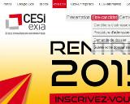

Alban CORNUAU
67 rue de Maurian
Rce le Maurian 4204D
33290 Blanquefort
(+33)6 95 18 15 55
alban.cornuau@viacesi.fr
IT SKILLS
- Internship: ERP (Odoo)
- Internship: Unity (Android – augmented reality)
- Internship: program with C# language linked to a database through SQL Server ↓
- Project: C and JAVA programmation
- Project: Database (with Microsoft Access, SQL)
- Project: Web (HTML, CSS, JS/jQuery, PHP, SQL, with WAMP)
EDUCATION
| 2013-2015 | 1ière/2ième Année École supérieure d’informatique EXIA CESI |
| 2013 | Baccalauréat S Sciences de l’Ingénieur option Sport |
| 2009 | Brevet des collèges |
WORK EXPERIENCES
| 2015 | 3 months | Internship at Aldébarande (Angoulême), creation of module for an ERP (Odoo) and Android application |
| 2014 | 9 weeks | Internship in ANTSYS , creation of an selling interface based on data base. The assignement was developpe an interface in C# language for external users. , creation of an selling interface based on data base. The assignement was developpe an interface in C# language for external users. |
| 2012/13/14 | Juillet/Aout | Guide/boatman seasonal Marais Poitevin at boat company Prada |
| March 2011 | a week | Internship in HEULIEZ , meeting engineers and the administration staff, discoverting of the general organisation of the company. , meeting engineers and the administration staff, discoverting of the general organisation of the company. |
OTHER INFORMATIONS
- PSC1 (prévention et secours civiques de niveau 1) resuscitation diploma
- Driving licence
- Judo (brown grade)
- Scouts of France